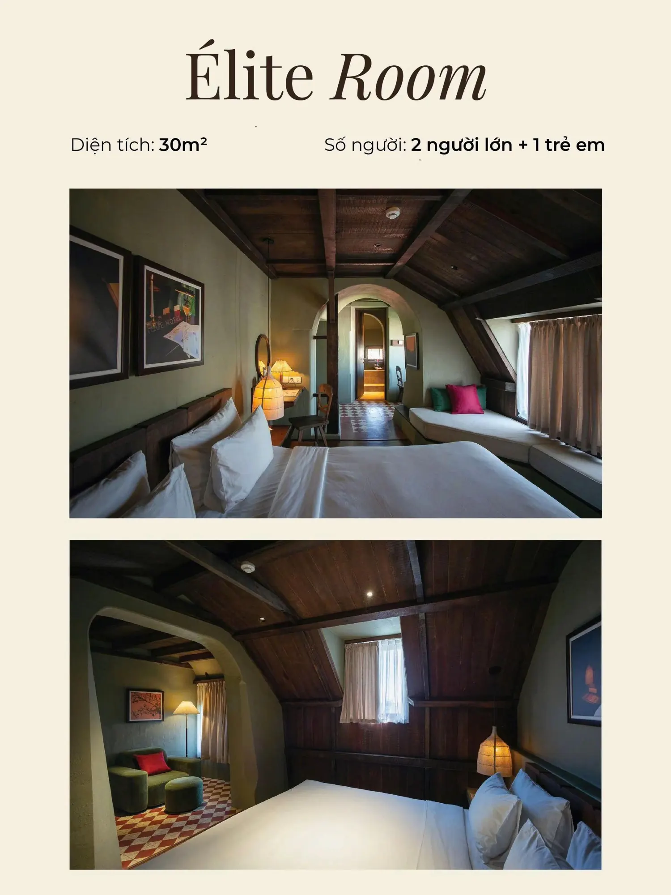

Đã xác minh
Khách sạn phổ biến tại Đà Lạt
Banla Boutique Hotel
47 Nguyễn Đình Chiểu, Phường 9, gần Hồ Xuân Hương, Vườn Hoa và chợ Đà Lạt. The Roof mở café 8:00–16:00 và bar 16:00–00:00.
Giá: liên hệ — chưa công bố
Săn mây, dạo Hồ Xuân Hương hay nghỉ dưỡng giữa rừng thông? Banla tổng hợp khách sạn, resort và homestay Đà Lạt (số lượng toàn thành phố chưa được xác minh), giá từ [giá từ – cập nhật từ dữ liệu web]/đêm. Lọc theo khu vực, tiện nghi và đặt phòng chỉ trong vài bước.

Đã xác minh
47 Nguyễn Đình Chiểu, Phường 9, gần Hồ Xuân Hương, Vườn Hoa và chợ Đà Lạt. The Roof mở café 8:00–16:00 và bar 16:00–00:00.
Giá: liên hệ — chưa công bố
Trung tâm (Hồ Xuân Hương, chợ Đà Lạt, Quảng trường Lâm Viên): đi bộ ra chợ đêm, quán ăn, điểm check-in. Phù hợp khách lần đầu, gia đình có trẻ nhỏ, nhóm bạn. Xem gợi ý trung tâm. Banla Boutique Hotel nằm ở Phường 9, gần khu vực này.
Ven trung tâm (Hùng Vương, Yersin, Trần Hưng Đạo, gần ga Đà Lạt – đồi Robin): yên tĩnh hơn, tiện đi cáp treo, Thiền viện Trúc Lâm. Phù hợp chuyến 3–4 ngày. Xem gợi ý ven trung tâm.
Hồ Tuyền Lâm (khoảng 7 km, hướng đèo Prenn): resort giữa rừng thông, cạnh hồ. Phù hợp nghỉ dưỡng, cặp đôi, khách có xe riêng. Xem gợi ý Hồ Tuyền Lâm.
Cầu Đất – Trại Mát / Tà Nung: farmstay, homestay đồi, săn mây. Phù hợp khách quen Đà Lạt, có xe. Xem gợi ý Cầu Đất.
Các liên kết khu vực chỉ đánh dấu mục trên trang. Canonical vẫn là /khach-san/da-lat/. Chưa có danh sách khách sạn riêng cho từng khu ngoài Banla.
Đọc thêm: Kinh nghiệm du lịch Đà Lạt theo mùa.
Từ [giá từ] đến [giá đến]/đêm tùy hạng sao và mùa — số liệu chưa được xác minh, cần cập nhật từ dữ liệu web.
Trung tâm quanh Hồ Xuân Hương và chợ Đà Lạt, vì có thể đi bộ ra chợ đêm, quán ăn và nhiều điểm tham quan chính.
Tùy chính sách từng khách sạn, điều kiện hủy được hiển thị rõ khi đặt (xem /chinh-sach).
[theo chính sách thực tế – cập nhật từ dữ liệu web]
Chọn ngày và đặt phòng ngay — xác nhận nhanh, hỗ trợ qua hotline 02633.633.777.
Điểm đến lân cận: Nha Trang (đèo Khánh Lê khoảng 135 km), TP. Hồ Chí Minh (bay đến sân bay Liên Khương, cách trung tâm Đà Lạt khoảng 30 km). Xem thêm câu hỏi thường gặp.